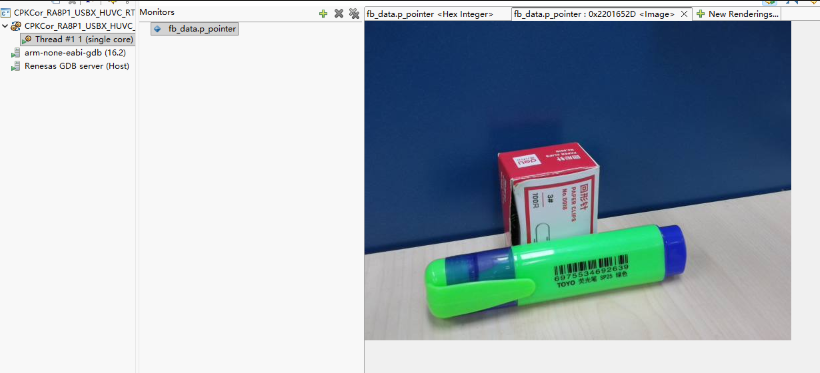
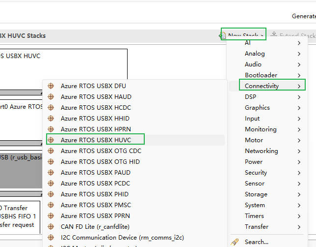

瑞萨电子-阎志刚
v1.1, 2026-11-12
:toc: left
:toclevels: 3
:sectnums:
在 e² studio 中导入 CPKCOR_RA8P1_USBX_HUVC_AutoNegotiate 工程，生成并编译程序。
程序启动后，可根据 src/config/uvccamera_cfg.h 中的编译配置选择 J-Link RTT Viewer 或 SCI9_B UART Console 作为 Debug Console，用于显示工程说明、USB Host 状态、摄像头信息及测试结果，并接收用户输入命令。
CPKCOR-RA8P1 USB Camera (UVC) Host Demo
USB host ready. Waiting for a USB camera ...连接支持 UVC 和 MJPEG 的 USB 摄像头后，程序自动完成以下操作：
枚举 USB UVC 摄像头。
读取 VideoStreaming Interface 和 Endpoint Descriptor。
自动判断摄像头使用 Isochronous 或 Bulk 传输方式。
扫描摄像头支持的 MJPEG 分辨率和帧率。
对每个模式执行协商，并根据 Endpoint、协商结果和 Frame Buffer 容量进行软件评估。
输出 OK、NG-P、NG-B 软件评估状态；实际运行 Mode 后输出 PASS / FAIL 硬件测试结果。
根据用户选择开始视频取流，并实时显示帧率、完整帧数、无效帧数和 USB 数据率。
执行 JPEG Capture，并通过 fb_data.p_pointer 在 e² studio Memory View 中查看图像。

示例输出如下：
Device : VID 2BDF PID 02B1 USB High-Speed (480 Mbps)
Transfer : BULK -> Bulk streaming path
Modes : 14 MJPEG modes in scan range
Result : PASS - complete frames at target rate on this board
Image : 2560x1440 JPEG
Rate : 30.1 fps
Frames : 169 complete, 0 invalid已完成以下实机验证：
| 摄像头 | 传输方式 | 已验证模式 | 结果 |
|---|---|---|---|
| Logitech C310 | |||
| Isochronous | |||
| 640 × 480 @ 30 fps、1280 × 720 @ 30 fps | |||
| PASS | |||
| Logitech C920 | |||
| Isochronous | |||
| 640 × 480 @ 30 fps、1280 × 720 @ 10 fps | |||
| PASS | |||
| Hikvision E18A | |||
| Bulk | |||
| 640 × 480 @ 30 fps、2560 × 1440 @ 30 fps | |||
| PASS |
本工程基于 Azure RTOS ThreadX 和 USBX HUVC。在 FSP Configuration 的 Stacks 选项卡中创建 USB Camera Thread，并添加 Azure RTOS USBX HUVC Stack。

USB Camera Thread 使用以下 Stack：
g_usbx_huvc0g_usbx_port0g_basic0g_transfer0g_transfer1g_uart9完整的 HUVC Stack 配置如下图所示：
主要配置如下：
| 配置项 | 设置 |
|---|---|
| Board | CPKCOR-RA8P1 |
| MCU | R7KA8P1KFLCAC / CPU0 / Cortex-M85 |
| RTOS | Azure RTOS ThreadX |
| FSP | 6.6.0 |
| Toolchain | LLVM for Arm 21.1.1 |
| USB Mode | Host |
| USB Speed | High-Speed |
| USB Module | USBHS Module 1 |
| USB DMA | Enabled |
| DMAC Transfer Size | 4-byte |
| USB Camera Thread Stack | 0x3000 bytes |
| USB Camera Thread Priority | 21 |
| RTT Thread Stack | 1024 bytes |
| RTT Thread Priority | 1 |
| Debug Console | J-Link RTT / SCI9_B UART |
| UART Instance | g_uart9 |
| UART Channel | 9 |
| UART Baud Rate | 115200, 8N1 |
| UART Callback | uvc_console_uart_callback |
| ThreadX Tick | 1000 Hz |
| D-Cache | Disabled |
| SDRAM | Disabled |
工程还创建了以下 ThreadX 对象：
g_payload_semaphoreg_device_insert_eventflag本工程使用 RA8P1 USB High-Speed Module 1 作为 USB Host。g_basic0 的主要属性配置如下图所示：
部分属性配置.jpg)
USB High-Speed Host 使用以下配置：
FUSB_EN_N：P615，GPIO Output High摄像头连接后，由开发板的 USB Host 接口为其提供 VBUS 电源。测试高功耗摄像头或频繁热插拔时，应确保开发板供电稳定。
SCI9_B UART 使用 g_uart9，配置为 115200 baud、8 data bits、No parity、1 stop bit，Callback 为 uvc_console_uart_callback。
UART Console 支持程序信息输出和键盘命令输入。RX 数据通过 SCI9_B UART Callback 接收并送入 Console 输入缓冲区，由 USB Camera Thread 解析执行，与 RTT Viewer 使用相同的控制命令。
使用 SCI9_B UART Console 时，调试接口保持为 SWD。
主要应用代码位于 src 文件夹中。为便于维护，配置文件、Console 相关文件以及 HUVC 相关公共数据分别放置在对应子目录中：
| 文件 | 作用 |
|---|---|
src/usbcamera_thread_entry.c | |
| USB Camera 主线程、UVC Descriptor Scan、Auto-Negotiate、Isochronous/Bulk 路径选择、MJPEG Frame Assembly、Capture、Performance Report 和 Hot-Plug。 | |
src/rtt_thread_entry.c | |
| J-Link RTT 输入输出和命令传递。 | |
src/hal_warmstart.c | |
| FSP/BSP 启动阶段相关初始化。 | |
src/config/uvccamera_cfg.h | |
| Resolution/帧率扫描范围、JPEG Buffer、Bulk Read、Console 类型选择等用户可配置参数。 | |
src/config/usbx_host_uvc_common.h | |
| Banner、菜单文本和公共宏定义。 | |
src/console/uvc_console.c | |
| 统一 Debug Console 实现，根据编译配置选择 J-Link RTT 或 SCI9_B UART Console。 | |
src/console/uvc_console.h | |
| Debug Console 公共接口定义，包括 Console 初始化、输出、输入和错误处理。 | |
src/console/common_utils.c | |
| J-Link RTT Queue、Byte Pool 和消息传递等公共处理。 | |
src/console/common_utils.h | |
| J-Link RTT Framework 公共数据结构、宏和接口声明。 | |
src/huvc/dht_table.h | |
| MJPEG 缺少 Huffman Table 时使用的 DHT 数据。 | |
src/SEGGER_RTT/ | |
| SEGGER J-Link RTT 相关源代码。 |
USBX 和 FSP 源文件没有被修改。Bulk UVC 的 PROBE/COMMIT、Pipe 配置和数据接收均在应用代码中实现。
Debug Console 通过 src/console/uvc_console.c 进行统一封装，上层 USB Camera 应用不直接区分 RTT 和 SCI9_B UART。
工程主要可配置参数位于 src/config/uvccamera_cfg.h。一般情况下不需要修改 USBX/FSP 源文件，通过该配置文件即可调整 Console 类型、扫描范围、Frame Buffer 和 Bulk 数据接收行为。
#define UVC_CONSOLE_RTT (0U)
#define UVC_CONSOLE_SCI9_B (1U)
#define UVC_CONSOLE_TYPE_DEFAULT UVC_CONSOLE_SCI9_B
#ifndef UVC_CONSOLE_TYPE
#define UVC_CONSOLE_TYPE UVC_CONSOLE_TYPE_DEFAULT
#endifUVC_CONSOLE_TYPE 用于选择 Debug Console Backend。
UVC_CONSOLE_RTT：使用 J-Link RTT Viewer。UVC_CONSOLE_SCI9_B：使用 SCI9_B UART Console。通常建议直接修改 src/config/uvccamera_cfg.h 中的 UVC_CONSOLE_TYPE_DEFAULT。特殊 Build Configuration 也可以在工程属性 C/C++ Build → Settings → Tool Settings → Compiler → Source → User defined compiler options 中使用 -DUVC_CONSOLE_TYPE=0 或 -DUVC_CONSOLE_TYPE=1 覆盖默认值。工程属性中的定义优先级更高；修改全局 Compiler Option 可能触发工程重新编译。
该配置只切换 Console 输入输出方式，不改变 UVC Auto-Negotiate、Isochronous/Bulk Streaming、JPEG Capture 和 Hot-Plug 等 Camera 功能。
#define UVC_AUTO_MAX_WIDTH (3840)
#define UVC_AUTO_MAX_HEIGHT (2160)
#define UVC_AUTO_MAX_FPS (60)
#define UVC_AUTO_MIN_FPS (10)以上参数限制 Auto-Negotiate 扫描并显示的 MJPEG Mode 范围。默认允许扫描最高 3840 × 2160、10~60 帧率的 Mode。
如果只希望测试最高 1920 × 1080，可修改为：
#define UVC_AUTO_MAX_WIDTH (1920)
#define UVC_AUTO_MAX_HEIGHT (1080)Mode 列表中的 OK / NG 状态仅为软件根据当前 Endpoint、PROBE 结果以及 Frame Buffer 容量计算得到的预评估结果，不代表硬件实测结论。实际是否可用应运行对应 Mode，并以测试报告中的 Result、Frames、Packet Error 和实际帧大小为准。
默认 MJPEG Frame Size 估算参数为：
#define UVC_MJPEG_EST_BPP_X100 (80U)软件根据 Resolution 估算 MJPEG Frame Size；如果摄像头通过 PROBE 返回了更小的 dwMaxVideoFrameSize，则使用摄像头返回值。默认使用内部 SRAM 时单个 JPEG Buffer 为 384 KB，因此 4K Mode 的估算帧大小通常超过默认 Buffer，会标记为 NG-B。若需要评估更大的 Frame，可启用 SDRAM Frame Buffer。
#define UVC_RA_ISO_MAX_PACKET (1024U)RA8P1 USBHS 在本工程使用方式下，每个 USB High-Speed micro-frame 接收一个 transaction，单个 transaction 最大 1024 Byte。
程序还会读取摄像头实际提供的 Single-Transaction Endpoint。例如摄像头最大可用单 transaction Endpoint 为 944 Byte，则：
payload <= 944 B -> OK
payload > 944 B -> NG-PNG-P 表示软件计算得到的 ISO Payload 超出了当前 Single-Transaction Endpoint 的接收范围。该状态属于软件预评估，仍允许用户运行对应 Mode；最终结果以实际 Streaming 测试输出为准。
#define JPEG_BUFFER_NUMBER (2)
#define JPEG_BUFFER_SIZE (384U * 1024U)
#define UVC_FB_IN_SDRAM (0)工程默认使用两个 JPEG Frame Buffer，每个 384 KB，放置在内部 SRAM。双缓冲机制可在保留最近一张完整 JPEG 图像的同时，继续组装下一帧。
MJPEG Frame Size 会受到以下因素影响：
Hikvision E18A 的 2560 × 1440 @ 30 FPS 已验证可以放入默认 Buffer。复杂场景下，3840 × 2160 分辨率的单帧 JPEG 数据可能超过 384 KB。
当 Mode 的软件估算 Frame Size 超过当前可用 Frame Buffer 时，Mode 列表标记为 NG-B。未启用 SDRAM 时，4K Mode 通常会因默认 384 KB Buffer 容量不足而被标记为 NG-B。
实际运行时，如果 Frame 超过 Buffer，报告会显示类似：
Result : FAIL - frames up to xxx KB do not fit the xxx KB buffer (USB link is OK)该结果表示 Frame Buffer 不足，并不表示 Bulk USB Link 无法传输对应 Resolution。
#define BULK_XFER_SIZE (16U * 1024U)
#define BULK_TIMEOUT_MS (300U)
#define BULK_STOP_CLEAR_HALT (1)
#define BULK_PIPE_FIRST (1U)
#define BULK_PIPE_LAST (5U)| 宏 | 说明 |
|---|---|
BULK_XFER_SIZE | 每次 Bulk IN Read 使用的接收长度。默认 16 KB，一个 UVC Payload 可以由多次 Bulk Read 组成。 |
BULK_TIMEOUT_MS | 等待 Bulk Transfer 完成的超时时间。摄像头暂时无数据时可能 NAK，因此 Timeout 不一定表示 USB Error。 |
BULK_STOP_CLEAR_HALT | 停止 Bulk Streaming 时是否向 Endpoint 发送 CLEAR_FEATURE(ENDPOINT_HALT)，默认开启。 |
BULK_PIPE_FIRST / BULK_PIPE_LAST | 应用层为 Bulk UVC 分配 USBHS Pipe 时允许使用的 Pipe 范围。Stop/Remove 时会释放 Pipe，以支持后续热插拔。 |
#define UVC_CAPTURE_TIMEOUT_MS (500U)输入 c 后，程序优先等待下一个 Frame Boundary 并停止 Streaming。正常情况下下一帧完成后立即退出；如果摄像头没有继续产生完整帧，最多等待约 500 ms，随后退出测试并返回菜单。
#define PERF_INVALID_PASS_X10 (50U)
#define PERF_FPS_PASS_PCT (95U)默认判断规则：
PASS / FAIL 是 Mode 实际运行后的硬件测试结果，与 Mode 列表中软件预估的 OK / NG-P / NG-B 分开显示。
工程不会根据摄像头型号或 VID/PID 写死取流路径，而是根据 VideoStreaming Endpoint Type 自动处理：
USB camera attached
|
v
Read UVC VideoStreaming descriptors
|
+-- Isochronous IN endpoint --> USBX HUVC ISO path
|
+-- Bulk IN endpoint --------> Application Bulk UVC path
|
v
Scan MJPEG resolution / FPS
|
v
PROBE each mode and calculate software estimate
|
v
Display OK / NG-P / NG-B
|
v
Run selected mode --> hardware Result: PASS / FAILIsochronous 摄像头使用 USBX HUVC Stack 取流。
RA8P1 USBHS 在本工程中每个 micro-frame 接收一个 transaction。软件根据协商得到的 Payload 与当前可用 Single-Transaction Endpoint 大小进行比较：Payload 位于接收范围内时标记为 OK，超出时标记为 NG-P。
部分摄像头会声明每个 micro-frame 使用 2~3 个 transaction 的 High-Bandwidth Isochronous Mode。此类模式的软件预评估可能为 NG-P，但仍允许用户运行实际 Streaming 测试：
PASS。FAIL。Bulk 摄像头使用应用层处理流程：
解析 MJPEG Format Index / Frame Index。
发送 VS PROBE SET_CUR。
发送 VS PROBE GET_CUR。
读取 dwMaxVideoFrameSize 和 dwMaxPayloadTransferSize。
发送 VS COMMIT SET_CUR。
创建 USBHS Bulk Pipe。
使用 r_usb_basic 完成 Bulk IN Read。
解析 UVC Payload Header。
根据 EOF、FID Toggle 或 JPEG EOI 完成 MJPEG Frame Assembly。
Stop 或 Remove 时中止 Transfer 并释放 Pipe。
Bulk Streaming 不受 Isochronous 每 micro-frame transaction 数量限制，但仍受 USB 实际吞吐、CPU Load 和 JPEG Frame Buffer 大小限制。
Mode 列表中的状态用于软件预评估，实际运行后的结论以测试报告中的 PASS / FAIL 为准。
| 状态 | 含义 |
|---|---|
OK | 根据当前 Endpoint、协商结果和 Frame Buffer 容量进行软件计算，未发现已知接收限制。OK 不代表已经完成实机验证，实际结果以运行该 Mode 后的硬件输出为准。 |
NG-P | Isochronous Mode 的协商 Payload 超过当前可用 Single-Transaction Endpoint 接收范围。该状态为软件预评估，Mode 仍可运行并通过实际 Streaming 验证。 |
NG-B | 软件估算的 MJPEG Frame Size 超过当前 JPEG Frame Buffer 可用容量。默认未启用 SDRAM 时，4K Mode 通常属于此状态。 |
PASS | Mode 实际运行后获得完整 MJPEG Frame，并满足当前测试的 Frame Integrity 要求。 |
FAIL | Mode 实际运行后出现持续帧不完整、Packet Error、Frame Buffer Overflow 等问题。 |
本工程支持 J-Link RTT Viewer 和 SCI9_B UART Console 显示摄像头信息、MJPEG Mode、实时性能和测试报告，同时接收用户输入。两种 Console 使用相同的命令接口。
15、41。建议使用完整输入后发送的方式，避免 15 被拆分成 1 和 5。| 命令 | 功能 |
|---|---|
<No.> | 运行指定编号的 Mode。例如输入 3 运行 No.3。 |
c | 在下一个 Frame Boundary 抓取 JPEG 并停止 Streaming。 |
x | 停止 Streaming，不主动请求新抓图。 |
l | 显示全部 MJPEG Modes。 |
p | 只显示软件评估为 OK 的 Modes。 |
d | 显示 VideoStreaming Endpoint 等详细诊断信息。 |
s | 重新扫描当前摄像头。 |
h | 显示命令帮助。 |

当 src/config/uvccamera_cfg.h 中选择 UVC_CONSOLE_SCI9_B 时，可以使用 PC Serial Terminal 直接查看 Console 输出并通过键盘输入命令。
串口配置：
115200 baud
8 data bits
No parity
1 stop bitSCI9_B UART Console 与 RTT Viewer 使用相同的命令，包括 <No.>、c、x、l、p、d、s 和 h。
字符输入由 uvc_console_uart_callback() 接收。数字 Mode 输入建议按 Enter 确认，例如：
12<Enter>表示选择 No.12 Mode。
执行 c 后，程序在下一个 Frame Boundary 停止视频流，并保留最近一张完整 JPEG Frame。
成功抓图后，Console 输出类似：
Capture : fb_data.p_pointer = 0x22016520 (70905 B)在 e² studio 中查看 JPEG：
打开 Memory / Monitors 视图。
添加 fb_data.p_pointer。
选择 New Renderings...。
选择 Image Rendering。
查看最新一张完整 JPEG 图像。
工程支持以下切换：
Stop/Remove 时会中止挂起的 Transfer，并释放应用层创建的 Bulk Pipe，避免影响下一台摄像头初始化。
本工程针对 CPKCOR-RA8P1 的 USBHS Host、引脚、电源控制和 ThreadX/USBX 配置完成验证。
移植到其他 RA8P1 开发板时，需要至少重新确认：
未在其他开发板上完成实机验证。